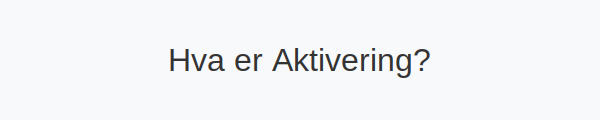

Aktivering er regnskapsprosessen hvor kostnader som oppfyller visse kriterier balanseføres som eiendeler (aktiva) og avskrives over tid. Gjennom aktivering sikrer man korrekt kostnadsfordeling og samsvar med relevante regnskapsprinsipper.

1. Hva er Aktivering?
Aktivering innebærer at en kostnad ikke kostnadsføres direkte i resultatet, men føres i balansen som en eiendel. Dette er sentralt for å fordele store investeringer over flere perioder, slik at resultatet reflekterer brukstid og økonomisk levetid.
2. Kriterier for Aktivering
For at en kostnad skal kunne aktiveres, må den oppfylle alle følgende kriterier:
| Kriterium | Forklaring |
|---|---|
| Kontroll | Bedriften må ha kontroll over ressursen som følge av tidligere hendelser. |
| Fremtidige økonomiske fordeler | Ressursen må forventes å bidra til fremtidige kontantstrømmer. |
| Pålitelig måling | Kostnaden må kunne måles på en pålitelig måte. |
Kriteriene er i tråd med det grunnleggende rammeverket for regnskapsføring av anleggsmidler og immaterielle eiendeler, inkludert forskning og utvikling.
3. Bokføring av Aktivering
Når en kostnad aktiveres, bokføres den som regel ved en journalføring som øker en eiendelskonto og krediterer en betalingskonto eller leverandørgjeld. Eksempel:
| Transaksjon | Debet | Kredit |
|---|---|---|
| Kjøp og installasjon av maskin | 1230 Maskiner | 2400 Leverandørgjeld |
| Utvikling av programvare | 1250 Immaterielle eiendeler | 2400 Leverandørgjeld |
For en detaljert gjennomgang av anskaffelseskost, se vår artikkel om anskaffelseskost.
4. Skattemessige Konsekvenser
Aktivering påvirker skattegrunnlaget ved at kostnader balanseføres og avskrives over tid. I Norge følger skattemyndighetene egne regler for avskrivningssatser og fradragsrett. Les mer i vår guide til avskrivning.
5. Sammenheng med Avskrivning og Amortisering
- Avskrivning gjelder for materielle eiendeler som maskiner og bygninger.
- Amortisering gjelder for immaterielle eiendeler som patenter og lisenser.
Begge prosesser bygger på at kostnaden først er aktivert i balansen gjennom aktivering. For mer informasjon, se vår artikkel om amortisering.
6. Oppsummering
Aktivering er et grunnleggende regnskapsprinsipp som sikrer at store kostnader for eiendeler fordeles over flere perioder. Dette gir mer korrekt resultatrapportering og samsvar med regnskapsstandarder.
For videre lesning, se også:
7. Praktiske Eksempler
Her er noen konkrete eksempler på hvordan aktivering anvendes i praksis:
| Eksempel | Debet | Kredit | Kommentar |
|---|---|---|---|
| Kjøp av produksjonsmaskin | 1230 Maskiner | 2400 Leverandørgjeld | Maskinen forventes å ha levetid på 5 år |
| Utvikling av ny programvare | 1250 Immaterielle eiendeler | 2400 Leverandørgjeld | Kriterier for aktivering oppfylt |
| Ombygging av kontorlokaler | 1240 Bygninger og tomter | 2400 Leverandørgjeld | Forbedring som øker levetid |
8. Vanlige Feil og Fallgruver
Ved aktivering er det viktig å unngå vanlige feil:
- Aktivering av kostnader som ikke oppfyller aktiveringskriteriene
- Manglende dokumentasjon av anskaffelseskost og kontroll over eiendelen
- Feil avskrivningsperiode i forhold til eiendelens økonomiske levetid
- Overser skattemessige begrensninger og fradragsregler
9. Realisering ved avhending
For informasjon om hvordan eiendeler realiseres ved salg eller avhending, se Realisering.